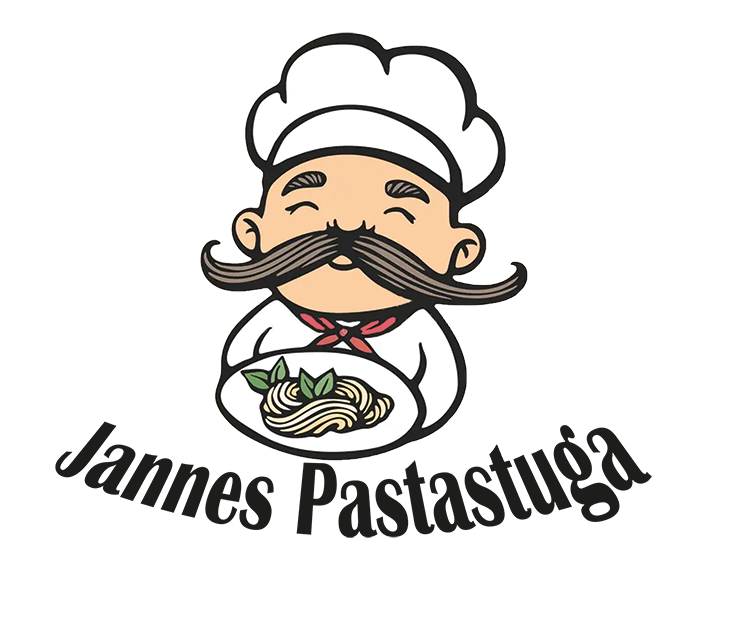

Dark Mode is OFF
Darkmode
LightMode

Carbonara
Startsida
|
Recept - Vodkapasta
|
Historia
Ingredienser - 4 Personer
4 port spaghetti
2 förp bacon (á 140g)
4 ägg
1 dl vispgrädde
2 dl riven parmesan
1/2 tsk salt
2 krm nymalen svartpeppar
Gör så här
Koka spaghettin enligt anvisningen på förpackningen.
Klipp bacon i ca 2 cm stora bitar. Stek baconbitarna knapriga i en stekpanna.
Vispa ihop ägg, grädde, parmesanost, salt och svartpeppar i en bunke.
Häll av pastan och häll tillbaka den i kastrullen, vänd ner äggblandningen och det stekta baconet.
Rör runt på svag värme till en krämig pasta.
Till servering: Servera carbonaran toppad med rucola och dra några extra tag med pepparkvarnen över.